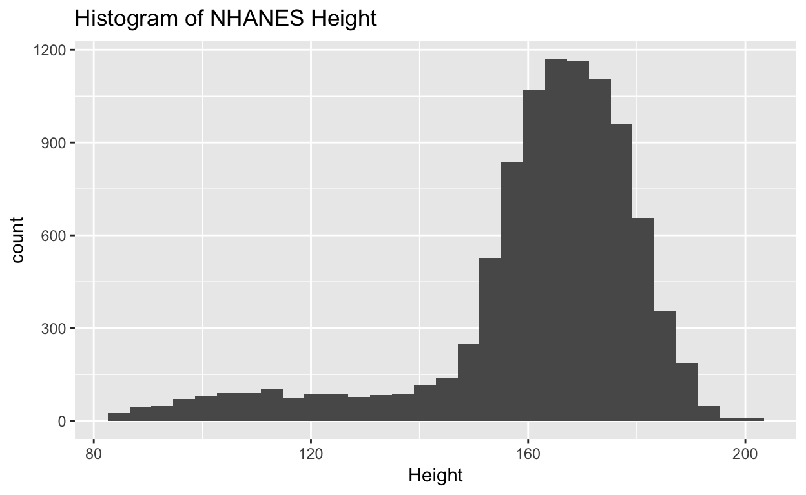

EDA with continuous variables
We saw bar plots and proportional plots used to visualize binary and categorical variables in the previous section. What are some good ways of visualizing continuous (quantitative) data? Let’s use the NHANES data set to visualize the variable Height.
(Note info about the NHANES data in the NHANES package can be found here with the disclaimer that NHANES are survey data so to do proper analyses we should use sampling weights. For illustration we will ignore this detail.)
A common visualization of the distribution of a continuous variable is a histogram:
## `stat_bin()` using `bins = 30`. Pick better value with `binwidth`.
We can also use a boxplot. The ?geom_boxplot help tells us what all the parts of the boxplot mean: “The lower and upper hinges correspond to the first and third quartiles (the 25th and 75th percentiles). This differs slightly from the method used by the boxplot function, and may be apparent with small samples. See boxplot.stats for for more information on how hinge positions are calculated for boxplot.
The upper whisker extends from the hinge to the largest value no further than 1.5 x IQR from the hinge (where IQR is the inter-quartile range, or distance between the first and third quartiles). The lower whisker extends from the hinge to the smallest value at most 1.5 x IQR of the hinge. Data beyond the end of the whiskers are called “outlying” points and are plotted individually."

All those dots piled up on the bottom are people who are outside the 1.5 x IQR, or, in other words, children.
What is a factor that may influence height?
There are of course many factors that influence someone’s height. The first might be age, which is another continuous variable. Can we plot the association of age versus height?

Right away we notice that people under 18 have a rapid increase in height, and then it levels off. Another influence on height is sex. We can separate the data into female and male:

Is there an association between height and age in adulthood (age >= 20)?

Other factors
What other factors might we separate on? Let’s just look at adults (age >= 20):
Suspicious data feature
Did you see something strange in those last plots? It’s always important to be on the lookout for red flags about data generation and processing.

Prediction
We can visualize a other continuous variables similarly. For instance, total cholesterol (TotChol).
Predict weight or total cholesterol? Factors to color by: Diabetes, PhysActive, Smoke100?

Fit a model
What to do here?
##
## Call:
## lm(formula = Height ~ Age + Gender + Race1 + Smoke100n + PhysActive,
## data = NHANES_adults)
##
## Residuals:
## Min 1Q Median 3Q Max
## -26.8665 -4.5299 -0.0491 4.4556 24.1857
##
## Coefficients:
## Estimate Std. Error t value Pr(>|t|)
## (Intercept) 166.330338 0.369803 449.781 < 2e-16 ***
## Age -0.087064 0.005434 -16.021 < 2e-16 ***
## Gendermale 13.505777 0.166569 81.082 < 2e-16 ***
## Race1Hispanic -5.279297 0.416539 -12.674 < 2e-16 ***
## Race1Mexican -5.861516 0.372049 -15.755 < 2e-16 ***
## Race1White 1.003795 0.263580 3.808 0.000141 ***
## Race1Other -3.869486 0.382799 -10.108 < 2e-16 ***
## Smoke100nSmoker 0.531817 0.170188 3.125 0.001786 **
## PhysActiveYes 0.459968 0.169943 2.707 0.006815 **
## ---
## Signif. codes: 0 '***' 0.001 '**' 0.01 '*' 0.05 '.' 0.1 ' ' 1
##
## Residual standard error: 6.825 on 6848 degrees of freedom
## (45 observations deleted due to missingness)
## Multiple R-squared: 0.535, Adjusted R-squared: 0.5345
## F-statistic: 984.9 on 8 and 6848 DF, p-value: < 2.2e-16